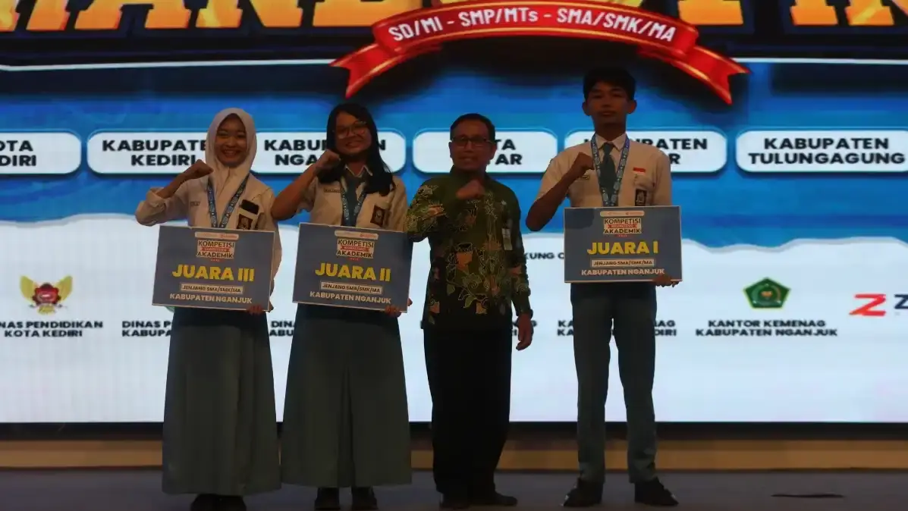

Kompetisi Kompetensi Akademik (KKA)
Ajang bergengsi untuk mengukur, menguji, dan mengapresiasi prestasi akademik siswa antar sekolah — diselenggarakan secara profesional dan dipublikasikan di Jawa Pos Radar Kediri.

Program Kompetisi Kompetensi Akademik
Kompetisi Kompetensi Akademik (KKA) adalah ajang kompetisi akademik bergengsi yang dirancang untuk mengukur, menguji, dan mengapresiasi kemampuan terbaik siswa dari berbagai sekolah dan madrasah di wilayah Kediri Raya. Program ini menjadi sarana bagi sekolah untuk menampilkan prestasi siswanya kepada khalayak luas secara terhormat dan terstruktur.
Diselenggarakan secara profesional oleh Radar Kediri Institute dengan dukungan penuh tim Jawa Pos Radar Kediri, setiap penyelenggaraan KKA dirancang dengan sistem kompetisi yang adil, transparan, dan terukur — mulai dari penyusunan soal, pengawasan, hingga penilaian akhir.
Seluruh rangkaian kegiatan dan hasil kompetisi dipublikasikan di media cetak dan digital Jawa Pos Radar Kediri yang terverifikasi Dewan Pers — menjadikan anggaran branding sekolah lebih akuntabel, efektif, dan berdampak nyata bagi reputasi institusi.
Keunggulan Program KKA
- Ajang kompetisi akademik resmi yang diakui dan dipublikasikan media massa
- Soal kompetisi disusun oleh tim ahli dan praktisi pendidikan berpengalaman
- Sistem penilaian transparan, objektif, dan dapat dipertanggungjawabkan
- Publikasi prestasi siswa dan sekolah di Jawa Pos Radar Kediri (cetak & digital)
- Trofi, medali, dan sertifikat penghargaan untuk peserta berprestasi
- Mempererat silaturahmi dan jaringan antar sekolah se-Kediri Raya
- Meningkatkan motivasi belajar dan semangat berprestasi siswa
Bidang Kompetisi
- Matematika
- Ilmu Pengetahuan Alam (IPA)
- Ilmu Pengetahuan Sosial (IPS)
- Bahasa Indonesia
- Bahasa Inggris
- Keahlian Vokasional (untuk SMK)
Susunan Acara (tentatif)
Registrasi & Technical Meeting
Pendaftaran ulang peserta dan penjelasan teknis kompetisi
Pembukaan Resmi
Sambutan panitia dan pembukaan kompetisi
Babak Penyisihan
Tes tertulis seluruh peserta sesuai bidang kompetisi masing-masing
Pengumuman Peserta Lolos Babak Final
Pengumuman 10 besar peserta per bidang kompetisi
Babak Final
Tes lisan / cerdas cermat untuk peserta lolos babak penyisihan
Ishoma
—
Pengumuman Pemenang & Awarding
Pengumuman juara, penyerahan trofi, medali, dan sertifikat penghargaan
Penutupan & Dokumentasi
Sesi foto bersama pemenang dan liputan media Jawa Pos Radar Kediri
Event Gallery
Dokumentasi Kompetisi Kompetensi Akademik (KKA) — Siswa SMP/SMA/MA/SMK se-Kediri Raya bersama Radar Kediri Institute:
{kind=link}
{kind=link}
{kind=link}
Event Organizer

Divisi Marketing JPRK
Event Organizer Radar Kediri
Info lebih lengkap, silakan hubungi:
officialrkinstitute@gmail.com
+62 831-9800-2246
Venue Acara
KKA dapat diselenggarakan di aula kami maupun di lokasi sekolah penyelenggara sesuai kesepakatan.
Aula Jawa Pos Radar Kediri
Aula Jawa Pos Radar Kediri dilengkapi fasilitas modern yang mendukung penyelenggaraan kompetisi akademik berskala besar. Tersedia pula opsi penyelenggaraan di sekolah atau gedung lain sesuai kebutuhan dan kapasitas peserta.
Fasilitas Kompetisi
- Ruang kompetisi ber-AC dan kondusif
- Peralatan audio visual lengkap
- Tim pengawas profesional
- Trofi, medali & sertifikat resmi
- Publikasi di Jawa Pos Radar Kediri
- Area parkir luas
Find Us Here
Click on the map to get detailed directions
Pertanyaan Sering Diajukan
Temukan jawaban atas pertanyaan umum seputar Kompetisi Kompetensi Akademik (KKA) di Radar Kediri Institute.